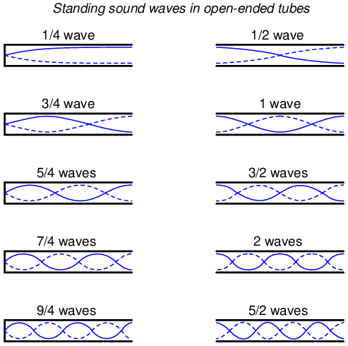

Early in my explorations of electricity, I came across a length of coaxial cable with the label “50 ohms” printed along its outer sheath. (Figure below) Now, coaxial cable is a two-conductor cable made of a single conductor surrounded by a braided wire jacket, with a plastic insulating material separating the two. As such, the outer (braided) conductor completely surrounds the inner (single wire) conductor, the two conductors insulated from each other for the entire length of the cable. This type of cabling is often used to conduct weak (low-amplitude) voltage signals, due to its excellent ability to shield such signals from external interference.
Coaxial cable contruction.
I was mystified by the “50 ohms” label on this coaxial cable. How could two conductors, insulated from each other by a relatively thick layer of plastic, have 50 ohms of resistance between them? Measuring resistance between the outer and inner conductors with my ohmmeter, I found it to be infinite (open-circuit), just as I would have expected from two insulated conductors. Measuring each of the two conductors' resistances from one end of the cable to the other indicated nearly zero ohms of resistance: again, exactly what I would have expected from continuous, unbroken lengths of wire. Nowhere was I able to measure 50 Ω of resistance on this cable, regardless of which points I connected my ohmmeter between.
What I didn't understand at the time was the cable's response to short-duration voltage “pulses” and high-frequency AC signals. Continuous direct current (DC) -- such as that used by my ohmmeter to check the cable's resistance -- shows the two conductors to be completely insulated from each other, with nearly infinite resistance between the two. However, due to the effects of capacitance and inductance distributed along the length of the cable, the cable's response to rapidly-changing voltages is such that it acts as a finite impedance, drawing current proportional to an applied voltage. What we would normally dismiss as being just a pair of wires becomes an important circuit element in the presence of transient and high-frequency AC signals, with characteristic properties all its own. When expressing such properties, we refer to the wire pair as a transmission line.
This chapter explores transmission line behavior. Many transmission line effects do not appear in significant measure in AC circuits of powerline frequency (50 or 60 Hz), or in continuous DC circuits, and so we haven't had to concern ourselves with them in our study of electric circuits thus far. However, in circuits involving high frequencies and/or extremely long cable lengths, the effects are very significant. Practical applications of transmission line effects abound in radio-frequency (“RF”) communication circuitry, including computer networks, and in low-frequency circuits subject to voltage transients (“surges”) such as lightning strikes on power lines.
Suppose we had a simple one-battery, one-lamp circuit controlled by a switch. When the switch is closed, the lamp immediately lights. When the switch is opened, the lamp immediately darkens: (Figure below)
Lamp appears to immediately respond to switch.
Actually, an incandescent lamp takes a short time for its filament to warm up and emit light after receiving an electric current of sufficient magnitude to power it, so the effect is not instant. However, what I'd like to focus on is the immediacy of the electric current itself, not the response time of the lamp filament. For all practical purposes, the effect of switch action is instant at the lamp's location. Although electrons move through wires very slowly, the overall effect of electrons pushing against each other happens at the speed of light (approximately 186,000 miles per second!).
What would happen, though, if the wires carrying power to the lamp were 186,000 miles long? Since we know the effects of electricity do have a finite speed (albeit very fast), a set of very long wires should introduce a time delay into the circuit, delaying the switch's action on the lamp: (Figure below)
At the speed of light, lamp responds after 1 second.
Assuming no warm-up time for the lamp filament, and no resistance along the 372,000 mile length of both wires, the lamp would light up approximately one second after the switch closure. Although the construction and operation of superconducting wires 372,000 miles in length would pose enormous practical problems, it is theoretically possible, and so this “thought experiment” is valid. When the switch is opened again, the lamp will continue to receive power for one second of time after the switch opens, then it will de-energize.
One way of envisioning this is to imagine the electrons within a conductor as rail cars in a train: linked together with a small amount of “slack” or “play” in the couplings. When one rail car (electron) begins to move, it pushes on the one ahead of it and pulls on the one behind it, but not before the slack is relieved from the couplings. Thus, motion is transferred from car to car (from electron to electron) at a maximum velocity limited by the coupling slack, resulting in a much faster transfer of motion from the left end of the train (circuit) to the right end than the actual speed of the cars (electrons): (Figure below)
Motion is transmitted sucessively from one car to next.
Another analogy, perhaps more fitting for the subject of transmission lines, is that of waves in water. Suppose a flat, wall-shaped object is suddenly moved horizontally along the surface of water, so as to produce a wave ahead of it. The wave will travel as water molecules bump into each other, transferring wave motion along the water's surface far faster than the water molecules themselves are actually traveling: (Figure below)
Wave motion in water.
Likewise, electron motion “coupling” travels approximately at the speed of light, although the electrons themselves don't move that quickly. In a very long circuit, this “coupling” speed would become noticeable to a human observer in the form of a short time delay between switch action and lamp action.
Suppose, though, that we had a set of parallel wires of infinite length, with no lamp at the end. What would happen when we close the switch? Being that there is no longer a load at the end of the wires, this circuit is open. Would there be no current at all? (Figure below)
Driving an infinite transmission line.
Despite being able to avoid wire resistance through the use of superconductors in this “thought experiment,” we cannot eliminate capacitance along the wires' lengths. Any pair of conductors separated by an insulating medium creates capacitance between those conductors: (Figure below)

Equivalent circuit showing stray capacitance between conductors.
Voltage applied between two conductors creates an electric field between those conductors. Energy is stored in this electric field, and this storage of energy results in an opposition to change in voltage. The reaction of a capacitance against changes in voltage is described by the equation i = C(de/dt), which tells us that current will be drawn proportional to the voltage's rate of change over time. Thus, when the switch is closed, the capacitance between conductors will react against the sudden voltage increase by charging up and drawing current from the source. According to the equation, an instant rise in applied voltage (as produced by perfect switch closure) gives rise to an infinite charging current.
However, the current drawn by a pair of parallel wires will not be infinite, because there exists series impedance along the wires due to inductance. (Figure below) Remember that current through any conductor develops a magnetic field of proportional magnitude. Energy is stored in this magnetic field, (Figure below) and this storage of energy results in an opposition to change in current. Each wire develops a magnetic field as it carries charging current for the capacitance between the wires, and in so doing drops voltage according to the inductance equation e = L(di/dt). This voltage drop limits the voltage rate-of-change across the distributed capacitance, preventing the current from ever reaching an infinite magnitude:
Equivalent circuit showing stray capacitance and inductance.

Voltage charges capacitance, current charges inductance.
Because the electrons in the two wires transfer motion to and from each other at nearly the speed of light, the “wave front” of voltage and current change will propagate down the length of the wires at that same velocity, resulting in the distributed capacitance and inductance progressively charging to full voltage and current, respectively, like this: (Figures below, below, below, below)
Uncharged transmission line.
Begin wave propagation.
Continue wave propagation.

Propagate at speed of light.
The end result of these interactions is a constant current of limited magnitude through the battery source. Since the wires are infinitely long, their distributed capacitance will never fully charge to the source voltage, and their distributed inductance will never allow unlimited charging current. In other words, this pair of wires will draw current from the source so long as the switch is closed, behaving as a constant load. No longer are the wires merely conductors of electrical current and carriers of voltage, but now constitute a circuit component in themselves, with unique characteristics. No longer are the two wires merely a pair of conductors, but rather a transmission line.
As a constant load, the transmission line's response to applied voltage is resistive rather than reactive, despite being comprised purely of inductance and capacitance (assuming superconducting wires with zero resistance). We can say this because there is no difference from the battery's perspective between a resistor eternally dissipating energy and an infinite transmission line eternally absorbing energy. The impedance (resistance) of this line in ohms is called the characteristic impedance, and it is fixed by the geometry of the two conductors. For a parallel-wire line with air insulation, the characteristic impedance may be calculated as such:
If the transmission line is coaxial in construction, the characteristic impedance follows a different equation:
In both equations, identical units of measurement must be used in both terms of the fraction. If the insulating material is other than air (or a vacuum), both the characteristic impedance and the propagation velocity will be affected. The ratio of a transmission line's true propagation velocity and the speed of light in a vacuum is called the velocity factor of that line.
Velocity factor is purely a factor of the insulating material's relative permittivity (otherwise known as its dielectric constant), defined as the ratio of a material's electric field permittivity to that of a pure vacuum. The velocity factor of any cable type -- coaxial or otherwise -- may be calculated quite simply by the following formula:
Characteristic impedance is also known as natural impedance, and it refers to the equivalent resistance of a transmission line if it were infinitely long, owing to distributed capacitance and inductance as the voltage and current “waves” propagate along its length at a propagation velocity equal to some large fraction of light speed.
It can be seen in either of the first two equations that a transmission line's characteristic impedance (Z0) increases as the conductor spacing increases. If the conductors are moved away from each other, the distributed capacitance will decrease (greater spacing between capacitor “plates”), and the distributed inductance will increase (less cancellation of the two opposing magnetic fields). Less parallel capacitance and more series inductance results in a smaller current drawn by the line for any given amount of applied voltage, which by definition is a greater impedance. Conversely, bringing the two conductors closer together increases the parallel capacitance and decreases the series inductance. Both changes result in a larger current drawn for a given applied voltage, equating to a lesser impedance.
Barring any dissipative effects such as dielectric “leakage” and conductor resistance, the characteristic impedance of a transmission line is equal to the square root of the ratio of the line's inductance per unit length divided by the line's capacitance per unit length:
A transmission line of infinite length is an interesting abstraction, but physically impossible. All transmission lines have some finite length, and as such do not behave precisely the same as an infinite line. If that piece of 50 Ω “RG-58/U” cable I measured with an ohmmeter years ago had been infinitely long, I actually would have been able to measure 50 Ω worth of resistance between the inner and outer conductors. But it was not infinite in length, and so it measured as “open” (infinite resistance).
Nonetheless, the characteristic impedance rating of a transmission line is important even when dealing with limited lengths. An older term for characteristic impedance, which I like for its descriptive value, is surge impedance. If a transient voltage (a “surge”) is applied to the end of a transmission line, the line will draw a current proportional to the surge voltage magnitude divided by the line's surge impedance (I=E/Z). This simple, Ohm's Law relationship between current and voltage will hold true for a limited period of time, but not indefinitely.
If the end of a transmission line is open-circuited -- that is, left unconnected -- the current “wave” propagating down the line's length will have to stop at the end, since electrons cannot flow where there is no continuing path. This abrupt cessation of current at the line's end causes a “pile-up” to occur along the length of the transmission line, as the electrons successively find no place to go. Imagine a train traveling down the track with slack between the rail car couplings: if the lead car suddenly crashes into an immovable barricade, it will come to a stop, causing the one behind it to come to a stop as soon as the first coupling slack is taken up, which causes the next rail car to stop as soon as the next coupling's slack is taken up, and so on until the last rail car stops. The train does not come to a halt together, but rather in sequence from first car to last: (Figure below)
Reflected wave.
A signal propagating from the source-end of a transmission line to the load-end is called an incident wave. The propagation of a signal from load-end to source-end (such as what happened in this example with current encountering the end of an open-circuited transmission line) is called a reflected wave.
When this electron “pile-up” propagates back to the battery, current at the battery ceases, and the line acts as a simple open circuit. All this happens very quickly for transmission lines of reasonable length, and so an ohmmeter measurement of the line never reveals the brief time period where the line actually behaves as a resistor. For a mile-long cable with a velocity factor of 0.66 (signal propagation velocity is 66% of light speed, or 122,760 miles per second), it takes only 1/122,760 of a second (8.146 microseconds) for a signal to travel from one end to the other. For the current signal to reach the line's end and “reflect” back to the source, the round-trip time is twice this figure, or 16.292 µs.
High-speed measurement instruments are able to detect this transit time from source to line-end and back to source again, and may be used for the purpose of determining a cable's length. This technique may also be used for determining the presence and location of a break in one or both of the cable's conductors, since a current will “reflect” off the wire break just as it will off the end of an open-circuited cable. Instruments designed for such purposes are called time-domain reflectometers (TDRs). The basic principle is identical to that of sonar range-finding: generating a sound pulse and measuring the time it takes for the echo to return.
A similar phenomenon takes place if the end of a transmission line is short-circuited: when the voltage wave-front reaches the end of the line, it is reflected back to the source, because voltage cannot exist between two electrically common points. When this reflected wave reaches the source, the source sees the entire transmission line as a short-circuit. Again, this happens as quickly as the signal can propagate round-trip down and up the transmission line at whatever velocity allowed by the dielectric material between the line's conductors.
A simple experiment illustrates the phenomenon of wave reflection in transmission lines. Take a length of rope by one end and “whip” it with a rapid up-and-down motion of the wrist. A wave may be seen traveling down the rope's length until it dissipates entirely due to friction: (Figure below)

Lossy transmission line.
This is analogous to a long transmission line with internal loss: the signal steadily grows weaker as it propagates down the line's length, never reflecting back to the source. However, if the far end of the rope is secured to a solid object at a point prior to the incident wave's total dissipation, a second wave will be reflected back to your hand: (Figure below)
Reflected wave.
Usually, the purpose of a transmission line is to convey electrical energy from one point to another. Even if the signals are intended for information only, and not to power some significant load device, the ideal situation would be for all of the original signal energy to travel from the source to the load, and then be completely absorbed or dissipated by the load for maximum signal-to-noise ratio. Thus, “loss” along the length of a transmission line is undesirable, as are reflected waves, since reflected energy is energy not delivered to the end device.
Reflections may be eliminated from the transmission line if the load's impedance exactly equals the characteristic (“surge”) impedance of the line. For example, a 50 Ω coaxial cable that is either open-circuited or short-circuited will reflect all of the incident energy back to the source. However, if a 50 Ω resistor is connected at the end of the cable, there will be no reflected energy, all signal energy being dissipated by the resistor.
This makes perfect sense if we return to our hypothetical, infinite-length transmission line example. A transmission line of 50 Ω characteristic impedance and infinite length behaves exactly like a 50 Ω resistance as measured from one end. (Figure below) If we cut this line to some finite length, it will behave as a 50 Ω resistor to a constant source of DC voltage for a brief time, but then behave like an open- or a short-circuit, depending on what condition we leave the cut end of the line: open (Figure below) or shorted. (Figure below) However, if we terminate the line with a 50 Ω resistor, the line will once again behave as a 50 Ω resistor, indefinitely: the same as if it were of infinite length again: (Figure below)
Infinite transmission line looks like resistor.
One mile transmission.
Shorted transmission line.
Line terminated in characteristic impedance.
In essence, a terminating resistor matching the natural impedance of the transmission line makes the line “appear” infinitely long from the perspective of the source, because a resistor has the ability to eternally dissipate energy in the same way a transmission line of infinite length is able to eternally absorb energy.
Reflected waves will also manifest if the terminating resistance isn't precisely equal to the characteristic impedance of the transmission line, not just if the line is left unconnected (open) or jumpered (shorted). Though the energy reflection will not be total with a terminating impedance of slight mismatch, it will be partial. This happens whether or not the terminating resistance is greater or less than the line's characteristic impedance.
Re-reflections of a reflected wave may also occur at the source end of a transmission line, if the source's internal impedance (Thevenin equivalent impedance) is not exactly equal to the line's characteristic impedance. A reflected wave returning back to the source will be dissipated entirely if the source impedance matches the line's, but will be reflected back toward the line end like another incident wave, at least partially, if the source impedance does not match the line. This type of reflection may be particularly troublesome, as it makes it appear that the source has transmitted another pulse.
In DC and low-frequency AC circuits, the characteristic impedance of parallel wires is usually ignored. This includes the use of coaxial cables in instrument circuits, often employed to protect weak voltage signals from being corrupted by induced “noise” caused by stray electric and magnetic fields. This is due to the relatively short timespans in which reflections take place in the line, as compared to the period of the waveforms or pulses of the significant signals in the circuit. As we saw in the last section, if a transmission line is connected to a DC voltage source, it will behave as a resistor equal in value to the line's characteristic impedance only for as long as it takes the incident pulse to reach the end of the line and return as a reflected pulse, back to the source. After that time (a brief 16.292 µs for the mile-long coaxial cable of the last example), the source “sees” only the terminating impedance, whatever that may be.
If the circuit in question handles low-frequency AC power, such short time delays introduced by a transmission line between when the AC source outputs a voltage peak and when the source “sees” that peak loaded by the terminating impedance (round-trip time for the incident wave to reach the line's end and reflect back to the source) are of little consequence. Even though we know that signal magnitudes along the line's length are not equal at any given time due to signal propagation at (nearly) the speed of light, the actual phase difference between start-of-line and end-of-line signals is negligible, because line-length propagations occur within a very small fraction of the AC waveform's period. For all practical purposes, we can say that voltage along all respective points on a low-frequency, two-conductor line are equal and in-phase with each other at any given point in time.
In these cases, we can say that the transmission lines in question are electrically short, because their propagation effects are much quicker than the periods of the conducted signals. By contrast, an electrically long line is one where the propagation time is a large fraction or even a multiple of the signal period. A “long” line is generally considered to be one where the source's signal waveform completes at least a quarter-cycle (90o of “rotation”) before the incident signal reaches line's end. Up until this chapter in the Lessons In Electric Circuits book series, all connecting lines were assumed to be electrically short.
To put this into perspective, we need to express the distance traveled by a voltage or current signal along a transmission line in relation to its source frequency. An AC waveform with a frequency of 60 Hz completes one cycle in 16.66 ms. At light speed (186,000 mile/s), this equates to a distance of 3100 miles that a voltage or current signal will propagate in that time. If the velocity factor of the transmission line is less than 1, the propagation velocity will be less than 186,000 miles per second, and the distance less by the same factor. But even if we used the coaxial cable's velocity factor from the last example (0.66), the distance is still a very long 2046 miles! Whatever distance we calculate for a given frequency is called the wavelength of the signal.
A simple formula for calculating wavelength is as follows:
The lower-case Greek letter “lambda” (λ) represents wavelength, in whatever unit of length used in the velocity figure (if miles per second, then wavelength in miles; if meters per second, then wavelength in meters). Velocity of propagation is usually the speed of light when calculating signal wavelength in open air or in a vacuum, but will be less if the transmission line has a velocity factor less than 1.
If a “long” line is considered to be one at least 1/4 wavelength in length, you can see why all connecting lines in the circuits discussed thusfar have been assumed “short.” For a 60 Hz AC power system, power lines would have to exceed 775 miles in length before the effects of propagation time became significant. Cables connecting an audio amplifier to speakers would have to be over 4.65 miles in length before line reflections would significantly impact a 10 kHz audio signal!
When dealing with radio-frequency systems, though, transmission line length is far from trivial. Consider a 100 MHz radio signal: its wavelength is a mere 9.8202 feet, even at the full propagation velocity of light (186,000 mile/s). A transmission line carrying this signal would not have to be more than about 2-1/2 feet in length to be considered “long!” With a cable velocity factor of 0.66, this critical length shrinks to 1.62 feet.
When an electrical source is connected to a load via a “short” transmission line, the load's impedance dominates the circuit. This is to say, when the line is short, its own characteristic impedance is of little consequence to the circuit's behavior. We see this when testing a coaxial cable with an ohmmeter: the cable reads “open” from center conductor to outer conductor if the cable end is left unterminated. Though the line acts as a resistor for a very brief period of time after the meter is connected (about 50 Ω for an RG-58/U cable), it immediately thereafter behaves as a simple “open circuit:” the impedance of the line's open end. Since the combined response time of an ohmmeter and the human being using it greatly exceeds the round-trip propagation time up and down the cable, it is “electrically short” for this application, and we only register the terminating (load) impedance. It is the extreme speed of the propagated signal that makes us unable to detect the cable's 50 Ω transient impedance with an ohmmeter.
If we use a coaxial cable to conduct a DC voltage or current to a load, and no component in the circuit is capable of measuring or responding quickly enough to “notice” a reflected wave, the cable is considered “electrically short” and its impedance is irrelevant to circuit function. Note how the electrical “shortness” of a cable is relative to the application: in a DC circuit where voltage and current values change slowly, nearly any physical length of cable would be considered “short” from the standpoint of characteristic impedance and reflected waves. Taking the same length of cable, though, and using it to conduct a high-frequency AC signal could result in a vastly different assessment of that cable's “shortness!”
When a source is connected to a load via a “long” transmission line, the line's own characteristic impedance dominates over load impedance in determining circuit behavior. In other words, an electrically “long” line acts as the principal component in the circuit, its own characteristics overshadowing the load's. With a source connected to one end of the cable and a load to the other, current drawn from the source is a function primarily of the line and not the load. This is increasingly true the longer the transmission line is. Consider our hypothetical 50 Ω cable of infinite length, surely the ultimate example of a “long” transmission line: no matter what kind of load we connect to one end of this line, the source (connected to the other end) will only see 50 Ω of impedance, because the line's infinite length prevents the signal from ever reaching the end where the load is connected. In this scenario, line impedance exclusively defines circuit behavior, rendering the load completely irrelevant.
The most effective way to minimize the impact of transmission line length on circuit behavior is to match the line's characteristic impedance to the load impedance. If the load impedance is equal to the line impedance, then any signal source connected to the other end of the line will “see” the exact same impedance, and will have the exact same amount of current drawn from it, regardless of line length. In this condition of perfect impedance matching, line length only affects the amount of time delay from signal departure at the source to signal arrival at the load. However, perfect matching of line and load impedances is not always practical or possible.
The next section discusses the effects of “long” transmission lines, especially when line length happens to match specific fractions or multiples of signal wavelength.
Whenever there is a mismatch of impedance between transmission line and load, reflections will occur. If the incident signal is a continuous AC waveform, these reflections will mix with more of the oncoming incident waveform to produce stationary waveforms called standing waves.
The following illustration shows how a triangle-shaped incident waveform turns into a mirror-image reflection upon reaching the line's unterminated end. The transmission line in this illustrative sequence is shown as a single, thick line rather than a pair of wires, for simplicity's sake. The incident wave is shown traveling from left to right, while the reflected wave travels from right to left: (Figure below)
Incident wave reflects off end of unterminated transmission line.
If we add the two waveforms together, we find that a third, stationary waveform is created along the line's length: (Figure below)
The sum of the incident and reflected waves is a stationary wave.
This third, “standing” wave, in fact, represents the only voltage along the line, being the representative sum of incident and reflected voltage waves. It oscillates in instantaneous magnitude, but does not propagate down the cable's length like the incident or reflected waveforms causing it. Note the dots along the line length marking the “zero” points of the standing wave (where the incident and reflected waves cancel each other), and how those points never change position: (Figure below)
The standing wave does not propgate along the transmission line.
Standing waves are quite abundant in the physical world. Consider a string or rope, shaken at one end, and tied down at the other (only one half-cycle of hand motion shown, moving downward): (Figure below)
Standing waves on a rope.
Both the nodes (points of little or no vibration) and the antinodes (points of maximum vibration) remain fixed along the length of the string or rope. The effect is most pronounced when the free end is shaken at just the right frequency. Plucked strings exhibit the same “standing wave” behavior, with “nodes” of maximum and minimum vibration along their length. The major difference between a plucked string and a shaken string is that the plucked string supplies its own “correct” frequency of vibration to maximize the standing-wave effect: (Figure below)
Standing waves on a plucked string.
Wind blowing across an open-ended tube also produces standing waves; this time, the waves are vibrations of air molecules (sound) within the tube rather than vibrations of a solid object. Whether the standing wave terminates in a node (minimum amplitude) or an antinode (maximum amplitude) depends on whether the other end of the tube is open or closed: (Figure below)

Standing sound waves in open ended tubes.
A closed tube end must be a wave node, while an open tube end must be an antinode. By analogy, the anchored end of a vibrating string must be a node, while the free end (if there is any) must be an antinode.
Note how there is more than one wavelength suitable for producing standing waves of vibrating air within a tube that precisely match the tube's end points. This is true for all standing-wave systems: standing waves will resonate with the system for any frequency (wavelength) correlating to the node/antinode points of the system. Another way of saying this is that there are multiple resonant frequencies for any system supporting standing waves.
All higher frequencies are integer-multiples of the lowest (fundamental) frequency for the system. The sequential progression of harmonics from one resonant frequency to the next defines the overtone frequencies for the system: (Figure below)
Harmonics (overtones) in open ended pipes
The actual frequencies (measured in Hertz) for any of these harmonics or overtones depends on the physical length of the tube and the waves' propagation velocity, which is the speed of sound in air.
Because transmission lines support standing waves, and force these waves to possess nodes and antinodes according to the type of termination impedance at the load end, they also exhibit resonance at frequencies determined by physical length and propagation velocity. Transmission line resonance, though, is a bit more complex than resonance of strings or of air in tubes, because we must consider both voltage waves and current waves.
This complexity is made easier to understand by way of computer simulation. To begin, let's examine a perfectly matched source, transmission line, and load. All components have an impedance of 75 Ω: (Figure below)

Perfectly matched transmission line.
Using SPICE to simulate the circuit, we'll specify the transmission line (t1) with a 75 Ω characteristic impedance (z0=75) and a propagation delay of 1 microsecond (td=1u). This is a convenient method for expressing the physical length of a transmission line: the amount of time it takes a wave to propagate down its entire length. If this were a real 75 Ω cable -- perhaps a type “RG-59B/U” coaxial cable, the type commonly used for cable television distribution -- with a velocity factor of 0.66, it would be about 648 feet long. Since 1 µs is the period of a 1 MHz signal, I'll choose to sweep the frequency of the AC source from (nearly) zero to that figure, to see how the system reacts when exposed to signals ranging from DC to 1 wavelength.
Here is the SPICE netlist for the circuit shown above:
Transmission line v1 1 0 ac 1 sin rsource 1 2 75 t1 2 0 3 0 z0=75 td=1u rload 3 0 75 .ac lin 101 1m 1meg * Using “Nutmeg” program to plot analysis .end
Running this simulation and plotting the source impedance drop (as an indication of current), the source voltage, the line's source-end voltage, and the load voltage, we see that the source voltage -- shown as vm(1) (voltage magnitude between node 1 and the implied ground point of node 0) on the graphic plot -- registers a steady 1 volt, while every other voltage registers a steady 0.5 volts: (Figure below)
No resonances on a matched transmission line.
In a system where all impedances are perfectly matched, there can be no standing waves, and therefore no resonant “peaks” or “valleys” in the Bode plot.
Now, let's change the load impedance to 999 MΩ, to simulate an open-ended transmission line. (Figure below) We should definitely see some reflections on the line now as the frequency is swept from 1 mHz to 1 MHz: (Figure below)
Open ended transmission line.
Transmission line v1 1 0 ac 1 sin rsource 1 2 75 t1 2 0 3 0 z0=75 td=1u rload 3 0 999meg .ac lin 101 1m 1meg * Using “Nutmeg” program to plot analysis .end
Resonances on open transmission line.
Here, both the supply voltage vm(1) and the line's load-end voltage vm(3) remain steady at 1 volt. The other voltages dip and peak at different frequencies along the sweep range of 1 mHz to 1 MHz. There are five points of interest along the horizontal axis of the analysis: 0 Hz, 250 kHz, 500 kHz, 750 kHz, and 1 MHz. We will investigate each one with regard to voltage and current at different points of the circuit.
At 0 Hz (actually 1 mHz), the signal is practically DC, and the circuit behaves much as it would given a 1-volt DC battery source. There is no circuit current, as indicated by zero voltage drop across the source impedance (Zsource: vm(1,2)), and full source voltage present at the source-end of the transmission line (voltage measured between node 2 and node 0: vm(2)). (Figure below)
At f=0: input: V=1, I=0; end: V=1, I=0.
At 250 kHz, we see zero voltage and maximum current at the source-end of the transmission line, yet still full voltage at the load-end: (Figure below)
At f=250 KHz: input: V=0, I=13.33 mA; end: V=1 I=0.
You might be wondering, how can this be? How can we get full source voltage at the line's open end while there is zero voltage at its entrance? The answer is found in the paradox of the standing wave. With a source frequency of 250 kHz, the line's length is precisely right for 1/4 wavelength to fit from end to end. With the line's load end open-circuited, there can be no current, but there will be voltage. Therefore, the load-end of an open-circuited transmission line is a current node (zero point) and a voltage antinode (maximum amplitude): (Figure below)
Open end of transmission line shows current node, voltage antinode at open end.
At 500 kHz, exactly one-half of a standing wave rests on the transmission line, and here we see another point in the analysis where the source current drops off to nothing and the source-end voltage of the transmission line rises again to full voltage: (Figure below)
Full standing wave on half wave open transmission line.
At 750 kHz, the plot looks a lot like it was at 250 kHz: zero source-end voltage (vm(2)) and maximum current (vm(1,2)). This is due to 3/4 of a wave poised along the transmission line, resulting in the source “seeing” a short-circuit where it connects to the transmission line, even though the other end of the line is open-circuited: (Figure below)
1 1/2 standing waves on 3/4 wave open transmission line.
When the supply frequency sweeps up to 1 MHz, a full standing wave exists on the transmission line. At this point, the source-end of the line experiences the same voltage and current amplitudes as the load-end: full voltage and zero current. In essence, the source “sees” an open circuit at the point where it connects to the transmission line. (Figure below)
Double standing waves on full wave open transmission line.
In a similar fashion, a short-circuited transmission line generates standing waves, although the node and antinode assignments for voltage and current are reversed: at the shorted end of the line, there will be zero voltage (node) and maximum current (antinode). What follows is the SPICE simulation (circuit Figure below and illustrations of what happens (Figure 2nd-below at resonances) at all the interesting frequencies: 0 Hz (Figure below) , 250 kHz (Figure below), 500 kHz (Figure below), 750 kHz (Figure below), and 1 MHz (Figure below). The short-circuit jumper is simulated by a 1 µΩ load impedance: (Figure below)
Shorted transmission line.
Transmission line v1 1 0 ac 1 sin rsource 1 2 75 t1 2 0 3 0 z0=75 td=1u rload 3 0 1u .ac lin 101 1m 1meg * Using “Nutmeg” program to plot analysis .end
Resonances on shorted transmission line
At f=0 Hz: input: V=0, I=13.33 mA; end: V=0, I=13.33 mA.
Half wave standing wave pattern on 1/4 wave shorted transmission line.
Full wave standing wave pattern on half wave shorted transmission line.
1 1/2 standing wavepattern on 3/4 wave shorted transmission line.
Double standing waves on full wave shorted transmission line.
In both these circuit examples, an open-circuited line and a short-circuited line, the energy reflection is total: 100% of the incident wave reaching the line's end gets reflected back toward the source. If, however, the transmission line is terminated in some impedance other than an open or a short, the reflections will be less intense, as will be the difference between minimum and maximum values of voltage and current along the line.
Suppose we were to terminate our example line with a 100 Ω resistor instead of a 75 Ω resistor. (Figure below) Examine the results of the corresponding SPICE analysis to see the effects of impedance mismatch at different source frequencies: (Figure below)

Transmission line terminated in a mismatch
Transmission line v1 1 0 ac 1 sin rsource 1 2 75 t1 2 0 3 0 z0=75 td=1u rload 3 0 100 .ac lin 101 1m 1meg * Using “Nutmeg” program to plot analysis .end
Weak resonances on a mismatched transmission line
If we run another SPICE analysis, this time printing numerical results rather than plotting them, we can discover exactly what is happening at all the interesting frequencies: (DC, Figure below; 250 kHz, Figure below; 500 kHz, Figure below; 750 kHz, Figure below; and 1 MHz, Figure below).
Transmission line v1 1 0 ac 1 sin rsource 1 2 75 t1 2 0 3 0 z0=75 td=1u rload 3 0 100 .ac lin 5 1m 1meg .print ac v(1,2) v(1) v(2) v(3) .end
freq v(1,2) v(1) v(2) v(3) 1.000E-03 4.286E-01 1.000E+00 5.714E-01 5.714E-01 2.500E+05 5.714E-01 1.000E+00 4.286E-01 5.714E-01 5.000E+05 4.286E-01 1.000E+00 5.714E-01 5.714E-01 7.500E+05 5.714E-01 1.000E+00 4.286E-01 5.714E-01 1.000E+06 4.286E-01 1.000E+00 5.714E-01 5.714E-01
At all frequencies, the source voltage, v(1), remains steady at 1 volt, as it should. The load voltage, v(3), also remains steady, but at a lesser voltage: 0.5714 volts. However, both the line input voltage (v(2)) and the voltage dropped across the source's 75 Ω impedance (v(1,2), indicating current drawn from the source) vary with frequency.
At f=0 Hz: input: V=0.57.14, I=5.715 mA; end: V=0.5714, I=5.715 mA.
At f=250 KHz: input: V=0.4286, I=7.619 mA; end: V=0.5714, I=7.619 mA.

At f=500 KHz: input: V=0.5714, I=5.715 mA; end: V=5.714, I=5.715 mA.
At f=750 KHz: input: V=0.4286, I=7.619 mA; end: V=0.5714, I=7.619 mA.

At f=1 MHz: input: V=0.5714, I=5.715 mA; end: V=0.5714, I=0.5715 mA.
At odd harmonics of the fundamental frequency (250 kHz, Figure 3rd-above and 750 kHz, Figure above) we see differing levels of voltage at each end of the transmission line, because at those frequencies the standing waves terminate at one end in a node and at the other end in an antinode. Unlike the open-circuited and short-circuited transmission line examples, the maximum and minimum voltage levels along this transmission line do not reach the same extreme values of 0% and 100% source voltage, but we still have points of “minimum” and “maximum” voltage. (Figure 6th-above) The same holds true for current: if the line's terminating impedance is mismatched to the line's characteristic impedance, we will have points of minimum and maximum current at certain fixed locations on the line, corresponding to the standing current wave's nodes and antinodes, respectively.
One way of expressing the severity of standing waves is as a ratio of maximum amplitude (antinode) to minimum amplitude (node), for voltage or for current. When a line is terminated by an open or a short, this standing wave ratio, or SWR is valued at infinity, since the minimum amplitude will be zero, and any finite value divided by zero results in an infinite (actually, “undefined”) quotient. In this example, with a 75 Ω line terminated by a 100 Ω impedance, the SWR will be finite: 1.333, calculated by taking the maximum line voltage at either 250 kHz or 750 kHz (0.5714 volts) and dividing by the minimum line voltage (0.4286 volts).
Standing wave ratio may also be calculated by taking the line's terminating impedance and the line's characteristic impedance, and dividing the larger of the two values by the smaller. In this example, the terminating impedance of 100 Ω divided by the characteristic impedance of 75 Ω yields a quotient of exactly 1.333, matching the previous calculation very closely.
A perfectly terminated transmission line will have an SWR of 1, since voltage at any location along the line's length will be the same, and likewise for current. Again, this is usually considered ideal, not only because reflected waves constitute energy not delivered to the load, but because the high values of voltage and current created by the antinodes of standing waves may over-stress the transmission line's insulation (high voltage) and conductors (high current), respectively.
Also, a transmission line with a high SWR tends to act as an antenna, radiating electromagnetic energy away from the line, rather than channeling all of it to the load. This is usually undesirable, as the radiated energy may “couple” with nearby conductors, producing signal interference. An interesting footnote to this point is that antenna structures -- which typically resemble open- or short-circuited transmission lines -- are often designed to operate at high standing wave ratios, for the very reason of maximizing signal radiation and reception.
The following photograph (Figure below) shows a set of transmission lines at a junction point in a radio transmitter system. The large, copper tubes with ceramic insulator caps at the ends are rigid coaxial transmission lines of 50 Ω characteristic impedance. These lines carry RF power from the radio transmitter circuit to a small, wooden shelter at the base of an antenna structure, and from that shelter on to other shelters with other antenna structures:
Flexible coaxial cables connected to rigid lines.
Flexible coaxial cable connected to the rigid lines (also of 50 Ω characteristic impedance) conduct the RF power to capacitive and inductive “phasing” networks inside the shelter. The white, plastic tube joining two of the rigid lines together carries “filling” gas from one sealed line to the other. The lines are gas-filled to avoid collecting moisture inside them, which would be a definite problem for a coaxial line. Note the flat, copper “straps” used as jumper wires to connect the conductors of the flexible coaxial cables to the conductors of the rigid lines. Why flat straps of copper and not round wires? Because of the skin effect, which renders most of the cross-sectional area of a round conductor useless at radio frequencies.
Like many transmission lines, these are operated at low SWR conditions. As we will see in the next section, though, the phenomenon of standing waves in transmission lines is not always undesirable, as it may be exploited to perform a useful function: impedance transformation.
Standing waves at the resonant frequency points of an open- or short-circuited transmission line produce unusual effects. When the signal frequency is such that exactly 1/2 wave or some multiple thereof matches the line's length, the source “sees” the load impedance as it is. The following pair of illustrations shows an open-circuited line operating at 1/2 (Figure below) and 1 wavelength (Figure below) frequencies:
Source sees open, same as end of half wavelength line.
Source sees open, same as end of full wavelength (2x half wavelength line).
In either case, the line has voltage antinodes at both ends, and current nodes at both ends. That is to say, there is maximum voltage and minimum current at either end of the line, which corresponds to the condition of an open circuit. The fact that this condition exists at both ends of the line tells us that the line faithfully reproduces its terminating impedance at the source end, so that the source “sees” an open circuit where it connects to the transmission line, just as if it were directly open-circuited.
The same is true if the transmission line is terminated by a short: at signal frequencies corresponding to 1/2 wavelength (Figure below) or some multiple (Figure below) thereof, the source “sees” a short circuit, with minimum voltage and maximum current present at the connection points between source and transmission line:
Source sees short, same as end of half wave length line.
Source sees short, same as end of full wavelength line (2x half wavelength).
However, if the signal frequency is such that the line resonates at 1/4 wavelength or some multiple thereof, the source will “see” the exact opposite of the termination impedance. That is, if the line is open-circuited, the source will “see” a short-circuit at the point where it connects to the line; and if the line is short-circuited, the source will “see” an open circuit: (Figure below)Line open-circuited; source “sees” a short circuit: at quarter wavelength line (Figure below), at three-quarter wavelength line (Figure below)
Source sees short, reflected from open at end of quarter wavelength line.
Source sees short, reflected from open at end of three-quarter wavelength line.
Line short-circuited; source “sees” an open circuit: at quarter wavelength line (Figure below), at three-quarter wavelength line (Figure below)
Source sees open, reflected from short at end of quarter wavelength line.
Source sees open, reflected from short at end of three-quarter wavelength line.
At these frequencies, the transmission line is actually functioning as an impedance transformer, transforming an infinite impedance into zero impedance, or vice versa. Of course, this only occurs at resonant points resulting in a standing wave of 1/4 cycle (the line's fundamental, resonant frequency) or some odd multiple (3/4, 5/4, 7/4, 9/4 . . .), but if the signal frequency is known and unchanging, this phenomenon may be used to match otherwise unmatched impedances to each other.
Take for instance the example circuit from the last section where a 75 Ω source connects to a 75 Ω transmission line, terminating in a 100 Ω load impedance. From the numerical figures obtained via SPICE, let's determine what impedance the source “sees” at its end of the transmission line at the line's resonant frequencies: quarter wavelength (Figure below), halfwave length (Figure below), three-quarter wavelength (Figure below) full wavelength (Figure below)
Source sees 100 Ω reflected from 100 Ω load at end of quarter wavelength line.
Source sees 100 Ω reflected from 100 Ω load at end of half wavelength line.
Source sees 56.25 Ω reflected from 100 Ω load at end of three-quarter wavelength line (same as quarter wavelength).

Source sees 56.25 Ω reflected from 100 Ω load at end of full-wavelength line (same as half-wavelength).
A simple equation relates line impedance (Z0), load impedance (Zload), and input impedance (Zinput) for an unmatched transmission line operating at an odd harmonic of its fundamental frequency:
One practical application of this principle would be to match a 300 Ω load to a 75 Ω signal source at a frequency of 50 MHz. All we need to do is calculate the proper transmission line impedance (Z0), and length so that exactly 1/4 of a wave will “stand” on the line at a frequency of 50 MHz.
First, calculating the line impedance: taking the 75 Ω we desire the source to “see” at the source-end of the transmission line, and multiplying by the 300 Ω load resistance, we obtain a figure of 22,500. Taking the square root of 22,500 yields 150 Ω for a characteristic line impedance.
Now, to calculate the necessary line length: assuming that our cable has a velocity factor of 0.85, and using a speed-of-light figure of 186,000 miles per second, the velocity of propagation will be 158,100 miles per second. Taking this velocity and dividing by the signal frequency gives us a wavelength of 0.003162 miles, or 16.695 feet. Since we only need one-quarter of this length for the cable to support a quarter-wave, the requisite cable length is 4.1738 feet.
Here is a schematic diagram for the circuit, showing node numbers for the SPICE analysis we're about to run: (Figure below)
Quarter wave section of 150 Ω transmission line matches 75 Ω source to 300 Ω load.
We can specify the cable length in SPICE in terms of time delay from beginning to end. Since the frequency is 50 MHz, the signal period will be the reciprocal of that, or 20 nano-seconds (20 ns). One-quarter of that time (5 ns) will be the time delay of a transmission line one-quarter wavelength long:
Transmission line v1 1 0 ac 1 sin rsource 1 2 75 t1 2 0 3 0 z0=150 td=5n rload 3 0 300 .ac lin 1 50meg 50meg .print ac v(1,2) v(1) v(2) v(3) .end
freq v(1,2) v(1) v(2) v(3) 5.000E+07 5.000E-01 1.000E+00 5.000E-01 1.000E+00
At a frequency of 50 MHz, our 1-volt signal source drops half of its voltage across the series 75 Ω impedance (v(1,2)) and the other half of its voltage across the input terminals of the transmission line (v(2)). This means the source “thinks” it is powering a 75 Ω load. The actual load impedance, however, receives a full 1 volt, as indicated by the 1.000 figure at v(3). With 0.5 volt dropped across 75 Ω, the source is dissipating 3.333 mW of power: the same as dissipated by 1 volt across the 300 Ω load, indicating a perfect match of impedance, according to the Maximum Power Transfer Theorem. The 1/4-wavelength, 150 Ω, transmission line segment has successfully matched the 300 Ω load to the 75 Ω source.
Bear in mind, of course, that this only works for 50 MHz and its odd-numbered harmonics. For any other signal frequency to receive the same benefit of matched impedances, the 150 Ω line would have to lengthened or shortened accordingly so that it was exactly 1/4 wavelength long.
Strangely enough, the exact same line can also match a 75 Ω load to a 300 Ω source, demonstrating how this phenomenon of impedance transformation is fundamentally different in principle from that of a conventional, two-winding transformer:
Transmission line v1 1 0 ac 1 sin rsource 1 2 300 t1 2 0 3 0 z0=150 td=5n rload 3 0 75 .ac lin 1 50meg 50meg .print ac v(1,2) v(1) v(2) v(3) .end
freq v(1,2) v(1) v(2) v(3) 5.000E+07 5.000E-01 1.000E+00 5.000E-01 2.500E-01
Here, we see the 1-volt source voltage equally split between the 300 Ω source impedance (v(1,2)) and the line's input (v(2)), indicating that the load “appears” as a 300 Ω impedance from the source's perspective where it connects to the transmission line. This 0.5 volt drop across the source's 300 Ω internal impedance yields a power figure of 833.33 µW, the same as the 0.25 volts across the 75 Ω load, as indicated by voltage figure v(3). Once again, the impedance values of source and load have been matched by the transmission line segment.
This technique of impedance matching is often used to match the differing impedance values of transmission line and antenna in radio transmitter systems, because the transmitter's frequency is generally well-known and unchanging. The use of an impedance “transformer” 1/4 wavelength in length provides impedance matching using the shortest conductor length possible. (Figure below)
Quarter wave 150 Ω transmission line section matches 75 Ω line to 300 Ω antenna.
A waveguide is a special form of transmission line consisting of a hollow, metal tube. The tube wall provides distributed inductance, while the empty space between the tube walls provide distributed capacitance: Figure below
Wave guides conduct microwave energy at lower loss than coaxial cables.
Waveguides are practical only for signals of extremely high frequency, where the wavelength approaches the cross-sectional dimensions of the waveguide. Below such frequencies, waveguides are useless as electrical transmission lines.
When functioning as transmission lines, though, waveguides are considerably simpler than two-conductor cables -- especially coaxial cables -- in their manufacture and maintenance. With only a single conductor (the waveguide's “shell”), there are no concerns with proper conductor-to-conductor spacing, or of the consistency of the dielectric material, since the only dielectric in a waveguide is air. Moisture is not as severe a problem in waveguides as it is within coaxial cables, either, and so waveguides are often spared the necessity of gas “filling.”
Waveguides may be thought of as conduits for electromagnetic energy, the waveguide itself acting as nothing more than a “director” of the energy rather than as a signal conductor in the normal sense of the word. In a sense, all transmission lines function as conduits of electromagnetic energy when transporting pulses or high-frequency waves, directing the waves as the banks of a river direct a tidal wave. However, because waveguides are single-conductor elements, the propagation of electrical energy down a waveguide is of a very different nature than the propagation of electrical energy down a two-conductor transmission line.
All electromagnetic waves consist of electric and magnetic fields propagating in the same direction of travel, but perpendicular to each other. Along the length of a normal transmission line, both electric and magnetic fields are perpendicular (transverse) to the direction of wave travel. This is known as the principal mode, or TEM (Transverse Electric and Magnetic) mode. This mode of wave propagation can exist only where there are two conductors, and it is the dominant mode of wave propagation where the cross-sectional dimensions of the transmission line are small compared to the wavelength of the signal. (Figure below)
Twin lead transmission line propagation: TEM mode.
At microwave signal frequencies (between 100 MHz and 300 GHz), two-conductor transmission lines of any substantial length operating in standard TEM mode become impractical. Lines small enough in cross-sectional dimension to maintain TEM mode signal propagation for microwave signals tend to have low voltage ratings, and suffer from large, parasitic power losses due to conductor “skin” and dielectric effects. Fortunately, though, at these short wavelengths there exist other modes of propagation that are not as “lossy,” if a conductive tube is used rather than two parallel conductors. It is at these high frequencies that waveguides become practical.
When an electromagnetic wave propagates down a hollow tube, only one of the fields -- either electric or magnetic -- will actually be transverse to the wave's direction of travel. The other field will “loop” longitudinally to the direction of travel, but still be perpendicular to the other field. Whichever field remains transverse to the direction of travel determines whether the wave propagates in TE mode (Transverse Electric) or TM (Transverse Magnetic) mode. (Figure below)
Waveguide (TE) transverse electric and (TM) transverse magnetic modes.
Many variations of each mode exist for a given waveguide, and a full discussion of this is subject well beyond the scope of this book.
Signals are typically introduced to and extracted from waveguides by means of small antenna-like coupling devices inserted into the waveguide. Sometimes these coupling elements take the form of a dipole, which is nothing more than two open-ended stub wires of appropriate length. Other times, the coupler is a single stub (a half-dipole, similar in principle to a “whip” antenna, 1/4λ in physical length), or a short loop of wire terminated on the inside surface of the waveguide: (Figure below)
Stub and loop coupling to waveguide.
In some cases, such as a class of vacuum tube devices called inductive output tubes (the so-called klystron tube falls into this category), a “cavity” formed of conductive material may intercept electromagnetic energy from a modulated beam of electrons, having no contact with the beam itself: (Figure below below)
Klystron inductive output tube.
Just as transmission lines are able to function as resonant elements in a circuit, especially when terminated by a short-circuit or an open-circuit, a dead-ended waveguide may also resonate at particular frequencies. When used as such, the device is called a cavity resonator. Inductive output tubes use toroid-shaped cavity resonators to maximize the power transfer efficiency between the electron beam and the output cable.
A cavity's resonant frequency may be altered by changing its physical dimensions. To this end, cavities with movable plates, screws, and other mechanical elements for tuning are manufactured to provide coarse resonant frequency adjustment.
If a resonant cavity is made open on one end, it functions as a unidirectional antenna. The following photograph shows a home-made waveguide formed from a tin can, used as an antenna for a 2.4 GHz signal in an “802.11b” computer communication network. The coupling element is a quarter-wave stub: nothing more than a piece of solid copper wire about 1-1/4 inches in length extending from the center of a coaxial cable connector penetrating the side of the can: (Figure below)
Can-tenna illustrates stub coupling to waveguide.
A few more tin-can antennae may be seen in the background, one of them a “Pringles” potato chip can. Although this can is of cardboard (paper) construction, its metallic inner lining provides the necessary conductivity to function as a waveguide. Some of the cans in the background still have their plastic lids in place. The plastic, being nonconductive, does not interfere with the RF signal, but functions as a physical barrier to prevent rain, snow, dust, and other physical contaminants from entering the waveguide. “Real” waveguide antennae use similar barriers to physically enclose the tube, yet allow electromagnetic energy to pass unimpeded.
Lessons In Electric Circuits copyright (C) 2000-2023 Tony R. Kuphaldt, under the terms and conditions of the CC BY License.
{kind=link}
{kind=link}
{kind=link}
{kind=link}
{kind=link}
{kind=link}
{kind=link}
{kind=link}
{kind=link}
{kind=link}
{kind=link}
{kind=link}
{kind=link}
{kind=link}
{kind=link}
{kind=link}
{kind=link}
{kind=link}
{kind=link}
{kind=link}
{kind=link}
{kind=link}
{kind=link}
{kind=link}
{kind=link}
{kind=link}
{kind=link}
{kind=link}
{kind=link}
{kind=link}
{kind=link}
{kind=link}
{kind=link}
{kind=link}
{kind=link}
{kind=link}
{kind=link}
{kind=link}
{kind=link}
{kind=link}
{kind=link}
{kind=link}
{kind=link}
{kind=link}
{kind=link}
{kind=link}
{kind=link}
{kind=link}
{kind=link}
{kind=link}
{kind=link}
{kind=link}
{kind=link}
{kind=link}
{kind=link}
{kind=link}
{kind=link}
{kind=link}
{kind=link}
{kind=link}
{kind=link}
{kind=link}
{kind=link}
{kind=link}
{kind=link}
{kind=link}
{kind=link}
{kind=link}
{kind=link}
{kind=link}
{kind=link}